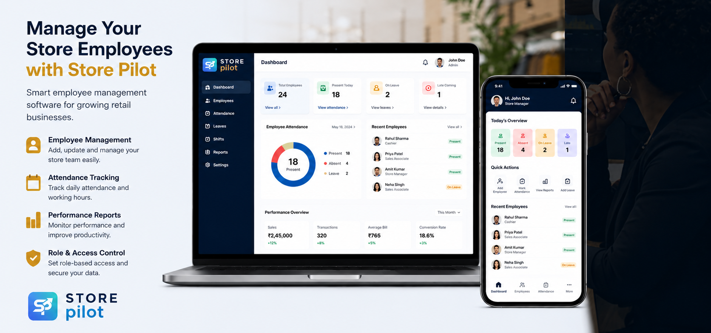

Store Pilot is a powerful retail employee management platform designed to simplify workforce operations for businesses of all sizes. From attendance tracking and shift management to task assignment, leave management, performance monitoring, and report generation, Store Pilot helps you manage your team efficiently, improve productivity, and keep your store operations running smoothly-all from a single, easy-to-use dashboard.

Features
Employee attendance tracking
Shift and duty management
Task assignment and monitoring
Task completion time tracking
Employee performance monitoring
File upload for completed tasks
Leave management
Employee reminders and notifications
Role-based access control
Excel report export
Team activity dashboard
Employee data and document management
Results / Benefits
Improved Employee Productivity: Track tasks, time, and performance more effectively.
Better Attendance Control: Reduce manual attendance errors and absenteeism issues.
Higher Team Accountability: Monitor who is doing what and task completion status.
Faster Task Management: Assign, track, and follow up on tasks in real time.
Centralized Workforce Management: Manage all employee operations from one dashboard.
Reduced Administrative Work: Automation reduces HR and manual follow-up effort.